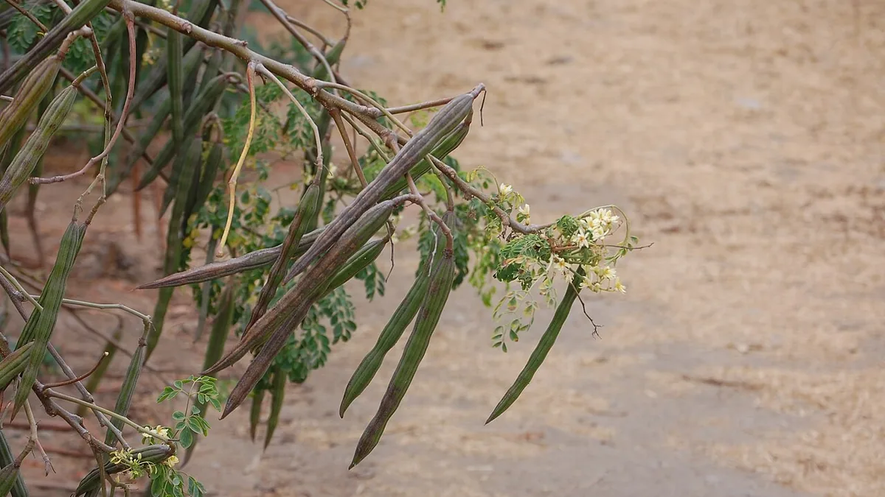

🗓️ बुवाई: जून–जुलाई📍 पूरे भारत में⏱️ 6–8 महीने में फली
सहजन (मुनगा) की खेती
Moringa (Drumstick) Farming — Pruning, Pods & Leaf Powder
सागौन में 20 साल लगते हैं, चंदन में 15 — सहजन पहले ही साल में फली देने लगता है। पर छँटाई न करने पर यह 20 फुट ऊँचा हो जाता है और फलियाँ पहुँच से बाहर।
✍️ Kunal Rajput — KrashiMitra⏱️ 11 मिनट पढ़ें📅 अगस्त 2026

सहजन की व्यावसायिक खेती — छँटाई करके पौधे को ऊँचा नहीं, चौड़ा बनाया जाता है।
इसे ऊँचा मत होने दीजिए, चौड़ा कीजिए
💧
जलभराव
सबसे बड़ी दुश्मन
✂️
3 फुट पर
चोटी काट दें
🌱
~650
पौधे प्रति एकड़
📖
भूमिका
इस लेख का पेड़ बाकी सब से अलग है। सागौन में 20 साल लगते हैं, चंदन में 15, महोगनी में 12 — पर सहजन (मुनगा, ड्रमस्टिक, Moringa oleifera)पहले ही साल में फलियाँ देने लगता है। यही वजह है कि जिस किसान को लंबा इंतज़ार नहीं करना, उसके लिए यह सबसे व्यावहारिक "पेड़ वाली फसल" है।
सहजन की दूसरी बड़ी खूबी इसकी सख़्तजान प्रकृति है — यह कम पानी, हल्की और उथली ज़मीन, और तेज़ गर्मी सब सह लेता है। जहाँ बाकी फसलें हार मान जाती हैं, वहाँ यह खड़ा रहता है। पर एक बात पर यह बिल्कुल समझौता नहीं करता, और यही इसकी नाकामी का सबसे बड़ा कारण है: जड़ में पानी का ठहराव। इस लेख में किस्म का चुनाव, बुवाई का तरीका, वह छँटाई जिससे उपज दोगुनी होती है, फली और पत्ती दोनों का बाज़ार, और वे गलतियाँ जो ज़्यादातर किसान करते हैं।
विज्ञापन
🎯
पहला फैसला — फली के लिए या पत्ती के लिए?
सहजन की खेती में सबसे पहला और सबसे ज़रूरी फैसला यही है, क्योंकि दोनों की दूरी, छँटाई और पूरी विधि अलग होती है। यह तय किए बिना पौधे लगा देना सबसे आम गलती है।
बात
🥬 फली (सब्ज़ी) के लिए
🌿 पत्ती (पाउडर) के लिए
दूरी
2.5 × 2.5 मीटर (लगभग 650/एकड़)
बहुत घनी — कतार 45 से.मी., पौधा 20 से.मी.
पौधे की ऊँचाई
छँटाई करके 5–6 फुट पर रोकी जाती है
कमर तक ही रखी जाती है, बार-बार कटाई
पहली उपज
6–8 महीने में फलियाँ
लगभग 75–90 दिन में पहली पत्ती कटाई
कटाई का चक्र
साल में आम तौर पर दो बार फली आती है
हर 40–60 दिन पर पत्ती कटाई
बाज़ार
स्थानीय सब्ज़ी मंडी — तुरंत नकद
पाउडर बनाने वाली इकाई / निर्यातक — खरीदार पहले चाहिए
जोखिम
कम — सब्ज़ी हर मंडी में बिकती है
ज़्यादा — खरीदार तय न हो तो पत्ती बेकार जाती है
⚠️
पत्ती/पाउडर वाला रास्ता तभी चुनिए जब आपके पास लिखित में खरीदार हो। इंटरनेट पर मोरिंगा पाउडर के ऊँचे दाम दिखते ज़रूर हैं, पर वह दाम तैयार, सुखाए और पैक किए गए पाउडर का होता है — किसान की हरी पत्ती का नहीं। बिना खरीदार के हरी पत्ती दो दिन में खराब हो जाती है। शुरुआत के लिए फली वाला रास्ता कहीं सुरक्षित है, क्योंकि सहजन की फली हर सब्ज़ी मंडी में बिक जाती है।
🌍
ज़मीन, जलवायु और वह एक चीज़ जो इसे मार देती है
मिट्टी: हल्की, भुरभुरी, अच्छी निकासी वाली बलुई दोमट सबसे अच्छी। उथली और पथरीली ज़मीन में भी चल जाता है।
जलभराव — सबसे बड़ी दुश्मन: सहजन की जड़ 2–3 दिन ठहरे पानी में रहने पर सड़ जाती है और पौधा मर जाता है। यह सहजन की नाकामी का नंबर एक कारण है। नीची और चिकनी ज़मीन में लगाना हो तो उठी हुई क्यारी या मेड़ पर लगाइए।
पानी: बहुत कम चाहिए। यह सूखा सह लेने वाला पौधा है — पर फली आने के समय हल्की सिंचाई से उपज और गुणवत्ता दोनों बढ़ती हैं।
तापमान: गर्म जलवायु पसंद है। तेज़ पाला इसे नुकसान पहुँचाता है — उत्तर भारत में पहले जाड़े में छोटे पौधों को बचाव चाहिए।
pH: लगभग 6 से 8 तक चल जाता है; हल्की क्षारीय ज़मीन भी सह लेता है।
🌱
किस्म और बुवाई
देसी सहजन का पेड़ ऊँचा होता है, फली तोड़ना मुश्किल होता है और साल में एक बार फल देता है। इसीलिए व्यावसायिक खेती के लिए वार्षिक (साल भर में तैयार होने वाली) किस्में विकसित की गई हैं, जो नीची रहती हैं और जल्दी व ज़्यादा फली देती हैं।
किस्म: तमिलनाडु कृषि विश्वविद्यालय की PKM-1 और PKM-2 जैसी वार्षिक किस्में व्यावसायिक खेती में सबसे प्रचलित हैं; कुछ इलाकों में ODC जैसी किस्में भी लगाई जाती हैं। अपने राज्य के कृषि विश्वविद्यालय या KVK से अपने इलाके के लिए संस्तुत किस्म पूछ लें — यही सबसे भरोसेमंद तरीका है।
बीज या कलम: व्यावसायिक खेती में आम तौर पर बीज से, क्योंकि बीज से बना पौधा गहरी जड़ बनाता है और सूखा बेहतर सहता है। कलम से लगाया पौधा जल्दी फल देता है पर जड़ उथली रहती है और तेज़ हवा में गिरने का खतरा रहता है।
बुवाई का समय: मानसून की शुरुआत (जून–जुलाई) सबसे आसान। सिंचाई हो तो फरवरी–मार्च में भी की जाती है। पाले वाले इलाकों में ऐसा समय चुनें कि पहली सर्दी तक पौधा मज़बूत हो चुका हो।
गड्ढा: लगभग 45×45×45 सेंटीमीटर, गोबर की सड़ी खाद मिलाकर भरें। हर गड्ढे में 2–3 बीज डालें, फिर सबसे मज़बूत एक पौधा रखकर बाकी हटा दें।
विज्ञापन
✂️
छँटाई — वह एक काम जो उपज दोगुनी कर देता है
यह इस लेख का सबसे काम का हिस्सा है, और यही वह काम है जो ज़्यादातर किसान नहीं करते।
सहजन को अपने हाल पर छोड़ दिया जाए तो वह सीधा ऊपर की ओर बढ़ता जाता है — एक लंबा, पतला पेड़ जिसकी फलियाँ 15–20 फुट ऊपर लगती हैं। उन्हें तोड़ना मुश्किल और महँगा होता है, और शाखाएँ कम होने से कुल फलियाँ भी कम आती हैं। फली नई शाखाओं पर लगती है — यानी जितनी ज़्यादा शाखाएँ, उतनी ज़्यादा फली।
पहली छँटाई (सबसे ज़रूरी): जब पौधा लगभग 3 फुट (1 मीटर) ऊँचा हो जाए, तब उसकी ऊपर की चोटी काट दीजिए। इससे बगल से 4–6 नई शाखाएँ फूट पड़ती हैं।
दूसरी छँटाई: जब वे शाखाएँ लगभग 2 फुट की हो जाएँ, उनकी भी चोटी काट दीजिए। अब पौधा झाड़ीनुमा और चौड़ा बनता है।
ऊँचाई रोकिए: पौधे को 5–6 फुट से ऊपर मत जाने दीजिए — इसी ऊँचाई पर खड़े होकर फलियाँ तोड़ी जा सकती हैं। यह मज़दूरी का खर्च बहुत घटाता है।
हर फसल के बाद छँटाई: फलियाँ तोड़ने के बाद शाखाओं को काट-छाँटकर पौधे को फिर से नया कर दीजिए; अगली फसल की शाखाएँ इसी से बनेंगी।
सालाना कड़ी छँटाई: कई किसान साल में एक बार पौधे को लगभग 3–4 फुट पर काट देते हैं ताकि वह हर साल नया और उत्पादक बना रहे।
💡
याद रखने का सूत्र: "चोटी काटो, शाखाएँ बढ़ाओ, शाखाओं पर फली पाओ।" जिस खेत में यह एक काम हो रहा है और जिसमें नहीं — दोनों की उपज में साफ फर्क दिखता है।
🥬
तुड़ाई और बिक्री
सही समय: फली तब तोड़ें जब वह पूरी लंबाई पा चुकी हो पर बीज अंदर उभरे न हों और फली मोड़ने पर आसानी से टूट जाए। ज़्यादा पकी फली में रेशा आ जाता है और मंडी में उसका दाम गिर जाता है।
तुड़ाई का अंतर: मौसम में हर 3–5 दिन पर तुड़ाई चलती रहती है।
सावधानी से तोड़ें: फली को झटके से खींचने पर शाखा टूटती है, जिससे अगली फसल का नुकसान होता है। डंठल समेत काटकर तोड़ना बेहतर है।
ग्रेडिंग: लंबाई और मोटाई के हिसाब से अलग-अलग बंडल बनाकर बेचने पर दाम बेहतर मिलता है।
जल्दी पहुँचाइए: सहजन की फली जल्दी मुरझाती है — तुड़ाई के बाद छाया में रखें और उसी दिन मंडी पहुँचाने की कोशिश करें।
बीज भी बिकते हैं: कुछ फलियाँ पेड़ पर पकने दें — उनके बीज तेल निकालने और अगली बुवाई के लिए बिकते हैं। यह एक अतिरिक्त आमदनी है।
⚠️
सहजन का भाव मौसम के साथ बहुत बदलता है — जब सबकी फसल एक साथ आती है तब दाम गिरता है। बुवाई का समय ऐसा रखने की कोशिश कीजिए कि आपकी फसल भीड़ के साथ न आए। अपने इलाके का मौजूदा भाव जानने के लिए नज़दीकी सब्ज़ी मंडी और कृषि मित्र के सहजन भाव पेज दोनों देखिए।
🐛
आम समस्याएँ
जड़ सड़न (जलभराव से): सबसे बड़ी और सबसे आम समस्या। इलाज नहीं, बचाव है — उठी क्यारी और अच्छी निकासी।
फल मक्खी: फली में छेद और अंदर कीड़ा। गिरी हुई फलियाँ रोज़ उठाकर गड्ढे में दबाएँ, और खेत में फेरोमोन ट्रैप लगाएँ — यह सबसे सस्ता और असरदार तरीका है।
बालदार सूँडी (हेयरी कैटरपिलर): पत्तियाँ चट कर जाती है। शुरुआत में दिखे तो हाथ से चुनकर नष्ट कर दें।
दीमक: हल्की रेतीली ज़मीन में। खेत में कच्चा गोबर न डालें, अच्छी सड़ी खाद ही डालें।
तेज़ हवा से टूटना: सहजन की लकड़ी नरम होती है। छँटाई करके ऊँचाई कम रखना ही सबसे अच्छा बचाव है।
⚠️
सहजन की फली और पत्ती दोनों सीधे खाई जाती हैं, इसलिए कीटनाशक के मामले में बहुत सावधानी ज़रूरी है। कोई भी दवा डालने से पहले नज़दीकी कृषि विज्ञान केंद्र (KVK) से पहचान और संस्तुति ज़रूर लें, लेबल पर लिखी प्रतीक्षा अवधि (waiting period) का पूरा पालन करें, और छिड़काव के तुरंत बाद तुड़ाई कभी न करें। दुकानदार की सलाह पर सीधे दवा मत डालिए।
🚫
ये गलतियाँ कभी न करें
जलभराव वाली ज़मीन में समतल रोपाई — सहजन में मौत का नंबर एक कारण। ऐसी ज़मीन में उठी क्यारी या मेड़ पर लगाइए।
छँटाई न करना — पौधा 20 फुट ऊँचा हो जाएगा, फलियाँ पहुँच से बाहर और संख्या में कम।
ज़्यादा पानी देना — यह सूखे का पौधा है; ज़्यादा पानी कम पानी से ज़्यादा नुकसान करता है।
खरीदार तय किए बिना पत्ती/पाउडर वाली खेती करना — हरी पत्ती दो दिन में खराब हो जाती है।
ज़्यादा पकी फली तोड़ना — रेशा आ जाता है और मंडी में दाम गिर जाता है।
फली झटके से खींचना — शाखा टूटती है और अगली फसल घटती है।
पहले जाड़े में पाले से बचाव न करना — उत्तर भारत में छोटे पौधे इसी वजह से मरते हैं।
🗓️
कब क्या करें
समय
ज़रूरी काम
बुवाई से पहले
तय करें — फली के लिए या पत्ती के लिए; उसी हिसाब से दूरी रखें
मई – जून
गड्ढे खोदें, गोबर की खाद मिलाएँ; KVK से संस्तुत किस्म का बीज लें
जून – जुलाई
बुवाई; हर गड्ढे में 2–3 बीज, बाद में एक मज़बूत पौधा रखें
पौधा 3 फुट का होते ही
पहली छँटाई — चोटी काटें (सबसे ज़रूरी काम)
शाखाएँ 2 फुट की होते ही
दूसरी छँटाई; ऊँचाई 5–6 फुट पर रोकें
पहला जाड़ा
पाले वाले इलाकों में छोटे पौधों का बचाव
6 – 8 महीने
पहली फली; हर 3–5 दिन पर तुड़ाई
हर फसल के बाद
शाखाओं की छँटाई कर पौधे को नया करें; गोबर की खाद दें
साल में एक बार
कड़ी छँटाई — पौधे को 3–4 फुट पर काटकर नया करें
✅
निष्कर्ष
तीन बातें याद रखिए। पहली — पहले तय कीजिए कि फली चाहिए या पत्ती, क्योंकि दोनों की पूरी विधि अलग है; और शुरुआत के लिए फली वाला रास्ता कहीं सुरक्षित है। दूसरी — छँटाई मत छोड़िए; चोटी काटने का यह छोटा-सा काम उपज को दोगुना कर देता है। तीसरी — पानी ठहरने मत दीजिए; यही एक चीज़ सबसे ज़्यादा सहजन मारती है।
सहजन उस किसान के लिए है जो पेड़ लगाना चाहता है पर 15 साल इंतज़ार नहीं कर सकता। इसे चंदन या सागौन के बागान के होस्ट/साथी पेड़ के रूप में भी लगाया जा सकता है — तब यह लंबी अवधि वाले पेड़ों के बीच के सालों की आमदनी भी चलाता रहेगा।
सहजन इकलौता ऐसा पेड़ है जो पहले साल से कमाना शुरू कर देता है — बस उसे बढ़ने मत दीजिए, फैलने दीजिए।
विज्ञापन
❓
अक्सर पूछे जाने वाले सवाल
1सहजन का पेड़ कितने समय में फल देने लगता है?
वार्षिक किस्में (जैसे PKM-1) लगाने पर 6 से 8 महीने में पहली फलियाँ आ जाती हैं, और उसके बाद आम तौर पर साल में दो बार फसल मिलती है। पत्ती के लिए घनी बुवाई की जाए तो पहली कटाई लगभग 75–90 दिन में ही मिल जाती है। यही सहजन को बाकी पेड़ों से अलग बनाता है।
2सहजन की छँटाई कब और कैसे करनी चाहिए?
पहली छँटाई तब करें जब पौधा लगभग 3 फुट ऊँचा हो जाए — उसकी ऊपर की चोटी काट दें, जिससे बगल से 4–6 नई शाखाएँ फूटती हैं। फली नई शाखाओं पर लगती है, इसलिए जितनी ज़्यादा शाखाएँ उतनी ज़्यादा उपज। पौधे को 5–6 फुट से ऊपर न जाने दें ताकि फलियाँ खड़े-खड़े तोड़ी जा सकें।
3एक एकड़ में सहजन के कितने पौधे लगते हैं?
फली (सब्ज़ी) के लिए 2.5 × 2.5 मीटर की दूरी पर लगभग 650 पौधे प्रति एकड़। पत्ती और पाउडर के लिए बुवाई बहुत घनी की जाती है — कतार 45 सेंटीमीटर और पौधा 20 सेंटीमीटर पर — जहाँ पौधों की संख्या कई गुना ज़्यादा होती है।
4सहजन की खेती में सबसे बड़ी गलती क्या है?
जलभराव वाली ज़मीन में लगाना। सहजन की जड़ 2–3 दिन ठहरे पानी में रहने पर सड़ जाती है और पौधा मर जाता है — यह इसकी मौत का नंबर एक कारण है। नीची या चिकनी ज़मीन में लगाना ज़रूरी हो तो उठी हुई क्यारी या मेड़ पर लगाएँ। दूसरी बड़ी गलती छँटाई न करना है।
5सहजन को कितना पानी चाहिए?
बहुत कम — यह सूखा सह लेने वाला पौधा है और ज़्यादा पानी देना कम पानी से ज़्यादा नुकसानदेह है। फली आने के समय हल्की सिंचाई से उपज और गुणवत्ता ज़रूर सुधरती है, पर खेत में पानी कभी ठहरना नहीं चाहिए।
6मोरिंगा पत्ती पाउडर की खेती फायदेमंद है?
फायदेमंद हो सकती है, पर सिर्फ तभी जब आपके पास पहले से लिखित खरीदार हो। इंटरनेट पर दिखने वाले ऊँचे दाम तैयार, सुखाए और पैक किए गए पाउडर के होते हैं, किसान की हरी पत्ती के नहीं — और हरी पत्ती दो दिन में खराब हो जाती है। शुरुआत के लिए फली वाला रास्ता ज़्यादा सुरक्षित है, क्योंकि सहजन की फली हर सब्ज़ी मंडी में बिक जाती है।
7सहजन की फली तोड़ने का सही समय क्या है?
फली तब तोड़ें जब वह पूरी लंबाई पा चुकी हो पर बीज अंदर उभरे न हों, और मोड़ने पर आसानी से टूट जाए। ज़्यादा पकी फली में रेशा आ जाता है और मंडी में उसका दाम गिर जाता है। फली झटके से खींचने के बजाय डंठल समेत काटकर तोड़ें, वरना शाखा टूटने से अगली फसल घटती है।
8क्या सहजन को दूसरे पेड़ों के साथ लगाया जा सकता है?
हाँ — सहजन चंदन जैसे पेड़ों के लिए स्थायी होस्ट का काम करता है और साथ ही हर साल फलियाँ भी देता है। लंबी अवधि वाले बागानों (चंदन, सागौन) में इसे साथी पेड़ के रूप में लगाना समझदारी है, क्योंकि यह बीच के सालों की आमदनी चलाता रहता है।
🌾
KrashiMitra.in — आपका विश्वसनीय कृषि साथी
मंडी भाव, सरकारी योजनाएं, बीज-खाद की जानकारी और फसल रोग उपचार — सब कुछ हिंदी में।